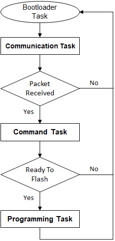
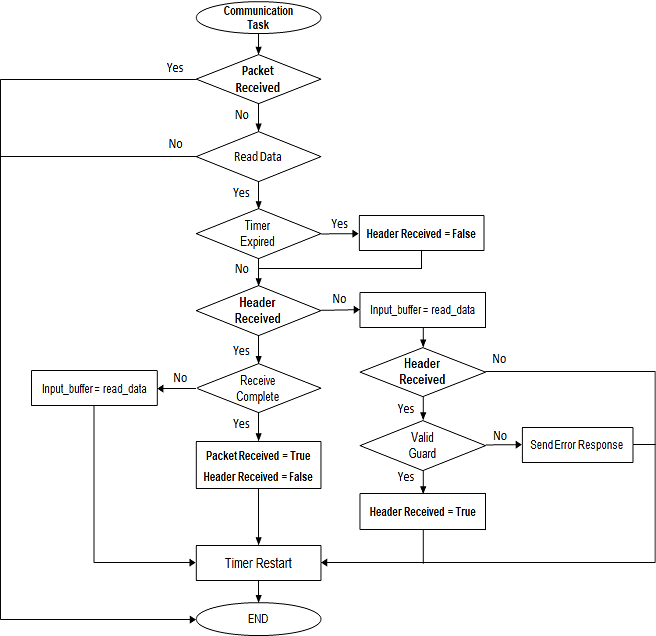
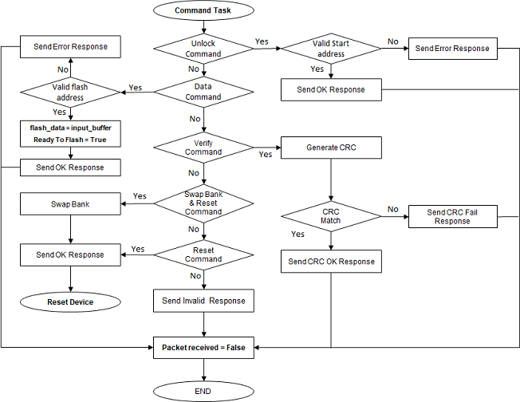
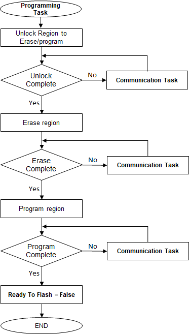

System Level Execution Flow
- The Bootloader code starts executing on a device Reset
- If there are no conditions to enter the firmware upgrade mode, the Bootloader starts executing the user application
- The Bootloader performs Flash erase/program operations while in the firmware upgrade mode

Firmware Upgrade Mode Execution Flow
Bootloader Task Flow
- Bootloader task is the main task which calls the 3 sub-tasks in a forever loop.
- It always calls the communication task to poll for command packets from host
- Once complete packet is received it calls Command task to process the received command
- If the command received was a data command it calls programming task to flash the application

Communication Task Flow
- This task is used to receive the data bytes from host PC
- If there are valid GUARD bytes received at start of packet it proceeds further to receive the whole packet or else reports error and waits for next command
- All bytes of the command frame must be sent within 100 ms of each other. After 100 ms of idle time, incomplete command is discarded and bootloader goes back to waiting for a new Command.
- This behavior allows host to re-synchronize in the case of synchronization loss.

Command Task Flow
- This task processes the packet received for supported commands
- If the received command is a DATA command, it sets ready_to_flash flag so that the bootloader task can call programming task

Programming Task Flow
- This task performs flash operations on the received data
- As the bootloader is running from RAM, While waiting for flash operations to complete it calls communication task to receive the next command in parallel

|
MPLAB Harmony Bootloader Help
|